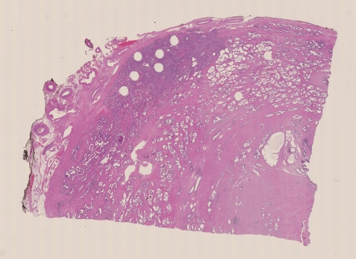
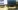
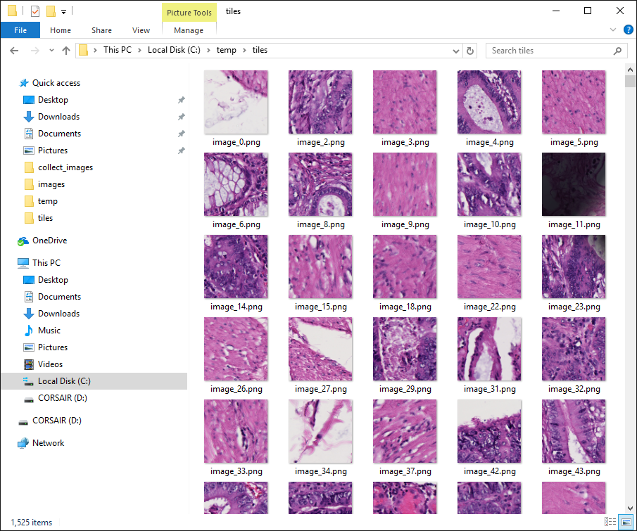

Bruk av bilder i dyplæring - utfordringer og løsninger
Lars Jahr Røine - Avdeling for applikasjonsutvikling, ICGI
Store datamengder
-
Eksempelprosjekt
- ~ 800 bilder
- 1.2 TB (1200 GB) dvs. ca 1.5 GB per bilde
 
Bildestørrelse
- På grunn av størrelsen kan ikke bildene brukes som de er
-
Noen alternativer:
- Nedskalere størrelsen
- Dele opp bildene i mange mindre bilder (tiles)
Tiling
-
Frem til nå har oppdeling i små bilder (tiling) blitt gjort som et preprosseseringssteg
-
Forrige prosjekt:
- 6 millioner tiles (512x512 pixler)
- Tre dager for å generere
- Fire dager på å kopiere
- Åtte maskiner i bruk

Utfordringer ved å gjøre tiling som preprosessering
- Meget tidkrevende
- Hele prosessen må gjøres på nytt dersom man ønsker annen oppløsning på tiles
- Mye manuell kopiering av filer
- Samme tiles blir lagret på forskjellige maskiner (duplisering)
Løsning
-
En sentralisert server som kan generere tiles på direkten
- Brukere kan velge størrelse på tiles
- Brukere kan hente ut tiles fra vilkårlige posisjoner
- Brukere kan hente ut tiles fra valgfritt zoomnivå
- Lite jobb å gjøre nye prosjekter tilgjengelig
- Må kunne brukes av flere klienter samtidig
- Stiller høye krav til maskinvare - spesielt harddisker
Hardware
- 2 x 12 x 3.0 Ghz kjerner
- 64 GB RAM
- 4 x 2.0 TB NVMe SSD
Software
- Enkel web-server skrevet i Python med bruk av Flask
- Openslide for å hente ut tiles